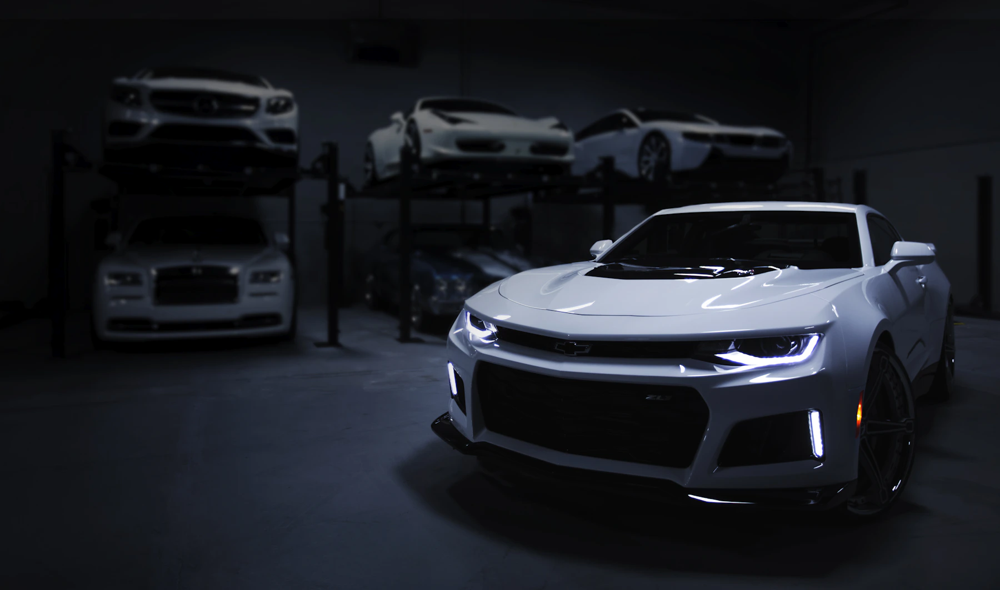
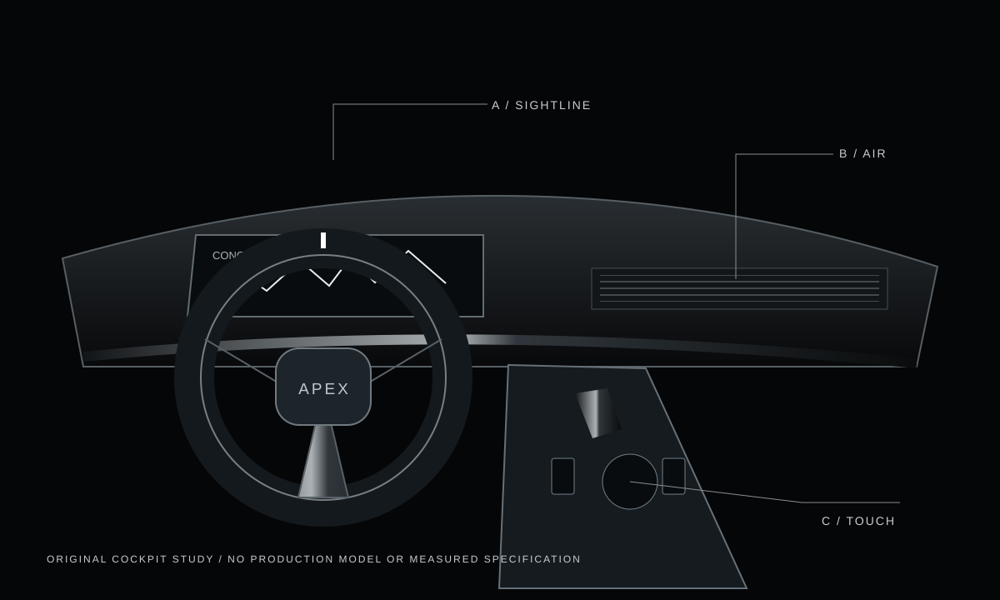

GT / BODY STUDY / 01
一段曲线之前。
尾灯、肩线与光的交界。借一张道路摄影观察车身比例，不将它称为封闭赛道实拍。

STATIC AUTOMOTIVE REFERENCE / 非本刊车型或真实赛事记录先确认座椅、视线与设备状态，再讨论下一段旅程。
线条不是装饰。观察车身，也观察自己留出的余地。
把喧闹放在外面，让驾驶舱只留下必要的信息。
场地概念仅作编辑图解，不构成驾驶教学，不鼓励道路竞速。
GT / BODY STUDY / 01
尾灯、肩线与光的交界。借一张道路摄影观察车身比例，不将它称为封闭赛道实拍。
COUPÉ / GARAGE / 02
熄火后留下的轮廓和机械感。一次静态的准备观察，不是品牌车型评测。
COUPÉ / CLOSED COURSE / 03
用原创编辑图解理解空间关系。线路、制动区与出口均为虚构，不作为实车操作依据。
3 篇固定文化档案
这组车型与场景暂无档案。保留条件，可分别调整或查看全部。
THE DRIVER'S ENVIRONMENT / ORIGINAL STUDY
一个驾驶舱，不必把所有东西都放到眼前。

独立虚构文化档案。仅使用许可摄影与原创工程插画；无赛事报名、性能实测或道路竞速功能。